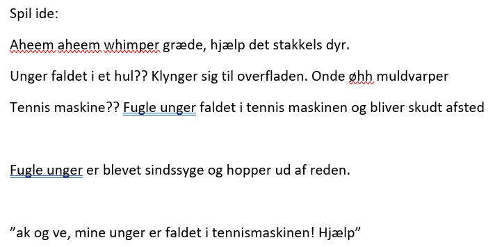

Ide
En ulykkelig of fortvivlet fuglemor vil have ens hjælp til at fange hendes mange kyllinger der er løbet løbsk i skoven, hvor der er ulve. Det gælder altså om at klikke på kyllingerne og undgå ulvene. Klikker man på ulvene 3 gange bliver man spist. Man skal nå at fange x antal kyllinger inden det bliver nat (eller timeren går ud). Når timeren går ud, bliver kyllingerne trætte og falder i søvn, hvilket er nemt bytte for ulvene :(
Første tanker
Helt fra start vidste jeg at det skulle handle om at hjælpe et dyr med sine unger. Her er de allerførste tanker jeg gjorde mig:
De tanker udviklede sig så til at man skal hjælpe en hønemor med sine kyllinger der er løbet løbsk i skoven.
Stil inspiration
Jeg valgte Lisa Vertudaches som stiludgangspunkt. Derfor er stilen meget håndtegnet, figurerne har store øjne og farverne er ikke nødvendigvis inden for stregerne